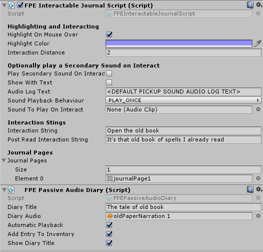

First Person Exploration Kit: Creating a Passive Audio Diary
Passive Audio Diaries are like Attached Notes, but with Audio. They allow you to add commentary or audio context to another type of Interactable object. For example, you could add a Passive Audio Diary to a light switch or a journal.
Passive Audio Diary
- Create any other Interactable type (e.g. Journal, Static, Pickup, etc.)
- Add FPEPassiveAudioDiary to your object, and set the following variables to suit your object:
- Diary Title: For example "The tale of the old book"
- Diary Audio: For example, a narratio explaining the history of the old book.
- Automatic Playback: Set to true if the diary should start playing as soon as the player looks at it. Set to false if you want to require the player press the interact button to start playback
- Add Entry To Inventory: Set to true to "collect" this audio diary into the ivnentory, which can be played back again later from the inventory menu.
- Show Diary Title: Set to true to show a title on screen when the diary is playing.
Below is an image showing the inspector of the example Journal object with a Passive Audio Diary attached.

- Run the scene, and interact with the Interactable with the attached passive audio diary to play the diary.
Similar to regular Audio Diaries, when passive audio diaries are retrieved, the sound clip will play and (optionally) the title of the diary will be displayed. They can also be added to inventory screen under the Audio Diaries tab, and included in saved game data. To listen to the diary again, open the Audio Diaries tab in the inventory screen and click on the title of interest:
You can attach a passive audio diary to any type of Interactable object, but it is not recommended that you attach them to regular Audio Diary objects :)